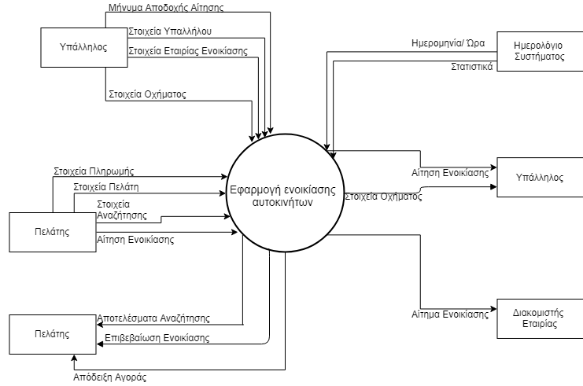
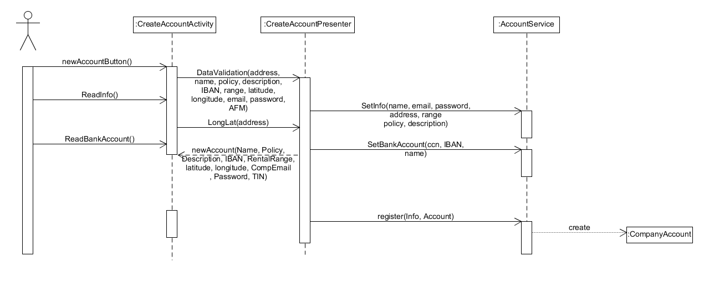
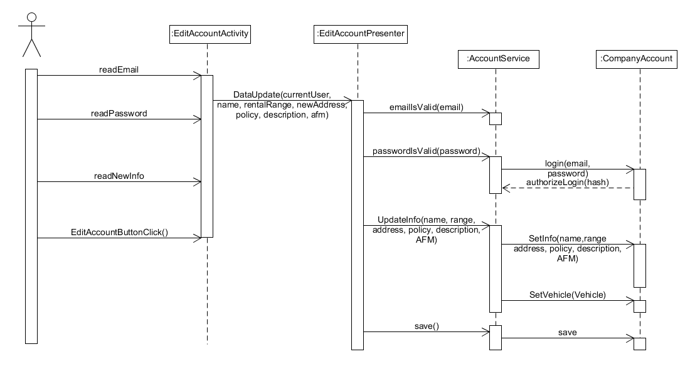
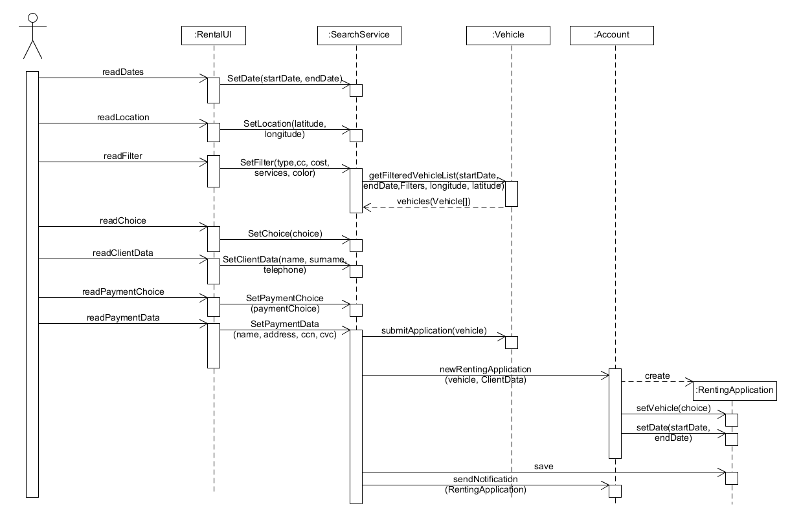

Το CarRentalApp είναι μια εφαρμογή ενοικίασης αυτοκινήτων που απευθύνεται κυρίως σε μικρομεσαίες και τοπικές επιχειρήσεις ενοικιαζόμενων αυτοκινήτων που δεν έχουν μεγάλη απήχηση και πρόσβαση σε ευρύ κοινό. Το παρόν έγγραφο περιλαμβάνει πληροφορίες για το CarRentalApp όπως: - Λειτουργικότητα της εφαρμογής - Ποίοι και με ποιό τρόπο θα αλληλεπιδρούν με την εφαρμογή - Περιπτώσεις χρήσεις της εφαρμογής - Προδιαγραφές που τηρεί η εφαρμογή - Βασικοί επιχειρησιακοί κανόνες που ακολουθεί η επιχειρησή-πάροχος της εφαρμογής προκειμένου να εξασφαλίσει την εύρυθμη λειτουργία της.
Η εφαρμογή ενοικίασης οχημάτων θα παρέχει λειτουργικότητα για:
Η εφαρμογή ενοικίασης οχημάτων δεν θα παρέχει λειτουργικότητα για:

| Έννοια | Επεξήγηση | |----------|---------| | Επιχείρηση | Η επιχείρηση είναι το νομικό πρόσωπο το οποίο επιθυμεί να πουλήσει τις υπηρεσίες της ( ενοικίαση οχημάτων) μέσω της εφαρμογής. | | Υπάλληλος | Ο υπάλληλος είναι εργαζόμενος της επιχείρησης και διαχειρίζεται τον λογαριασμό της στην εφαρμογή για εκείνη. Εκείνος είναι ο υπεύθυνος επεξεργασίας των στοιχείων της, των οχημάτων της και των αιτήσεών της. | | Πολιτική | Αναφέρεται στην πολιτική της επιχείρησης και εξηγεί τον τρόπο που με τον οποίο λειτουργεί η επιχείρηση και τους περιορισμούς που θέτει. | | Όχημα | Το όχημα είναι το αντικείμενο που είναι διαθέσιμο προς ενοικίαση από την κάθε επιχείρηση. Κάθε επιχείρηση μπορεί να διαθέτει διαφορετικά οχήματα και διαφορετικό πλήθος για το κάθε ένα. Το όχημα προσδιορίζεται από κάποια χαρακτηριστικά (μάρκα, τύπος, κατηγορία, κυβικά, θέσεις κλπ.).| | Αίτηση ενοικίασης | Η αίτηση περιέχει όλα τα στοιχεία που χρειάζεται η επιχείρηση για να προχωρήσει στην ενοικίαση του οχήματος. Ενδεικτικά τα στοιχεία αυτά είναι το ονοματεπώνυμο του πελάτη, το όχημα που έχει επιλεγεί, η περιοχή και οι ημερομηνίες ενοικίασης. |
Η εφαρμογή υποθέτει ότι οι χρήστες της είναι εξοικιωμένοι με την χρήση smartphone. Απαιτείται η κάθε εταιρία να ανανεώνει την διαθεσιμότητα των οχημάτων της (όταν η κράτηση δεν γίνεται μέσω της εφαρμογής, ή αφαιρείται/προστίθεται νέο όχημα) ώστε να είναι επίκαιρα τα δεδομένα που παρέχονται στον χρήστη.
| Ενδιαφερόμενοι | Ανάγκες | |----------------|---------| | Υπάλληλος | Θέλει να μπορεί να δημιουργεί λογαριασμό για την επιχείρηση στην οποία εργάζεται είτε να συνδέεται σε αυτόν μετά την δημιουργία του, να επεξεργάζεται τα στοιχέια της και την πολιτική της. Θέλει να προσθέτει νέα οχήματα στο κατάλογο του λογαριασμού της επιχείρησης και να επεξεργάζεται τα στοιχεία ακόμη και των προηγούμενων. Θέλει να συνδέεται στην εφαρμογή. Θέλει να έχει πρόσβαση στα αιτήματα που δέχεται η επιχείρηση για ενοικίαση και να μπορεί να απορρίπτει κάποιο εντός 8 ωρών για κάποιο σημαντικό λόγο. Θέλει να λαμβάνει στατιστική ενημέρωση για την πορεία της επιχείρησης μέσα στην εφαρμογή. Θέλει να λαμβάνει συμβουλές για το πως να αυξήσει τις πωλήσεις της και να βελτιώσει την παρουσία της στην εφαρμογή.| | Πελάτης | Θέλει να μπορεί να νοικιάσει όχημα μέσω της εφαρμογής, αναζητώντας οχήματα βάσει των προτιμήσεών του και να ολοκληρώνει την διαδικασία μέσα στην εφαρμογή γρήγορα.|
| Actor | Περιγραφή | Στόχοι | Ενδιαφερόμενοι| |-------|-----------|--------|---------------| | Υπάλληλος| Ο υπάλληλος είναι εργαζόμενος της επιχείρησης και διαχειρίζεται τον λογαριασμό της στην εφαρμογή για εκείνη. Εκείνος είναι ο υπεύθυνος επεξεργασίας των στοιχείων της, των οχημάτων της και των αιτήσεών της. | Διαχείρηση λογαριασμού, διαχείρηση οχημάτων, διαχείρηση αιτήσεων. | Υπάλληλος | | Ημερολόγιο συστήματος | Το ημερολόγιο συστήματος εξάγει στατιστικά και συμβουλές τα οποία τα στέλνει με μορφή αναφοράς στην επιχείρηση. | Η ενημέρωση της επιχείρησης και η βελτίωση της μέσω της εφαρμογής | Υπάλληλος| | Πελάτης | Ο πελάτης είναι ο χρήστης της εφαρμογής που επιθυμεί να νοικιάσει ένα όχημα, αναζητώντας το και ολοκληρώνοντας την διαδικασία της ενοικίασης και της πληρωμής μέσω της εφαρμογής. | Η γρήγορη εύρεση ενός οχήματος προς ενοικίαση και η εύκολη πληρωμή.| Πελάτης|
Η ταχύτητα του συστήματος θα πρέπει να είναι ανεκτή από κάθε χρήστη και να μην επηρεάζει την λειτουργία του. Θα χρησιμοποιούνται κατάλληλες δομές δεδομένων και αλγόριθμοι για να επιτευχθεί αυτός ο σκοπός.
Το σύστημα θα πρέπει α είναι διαθέσιμο για όλες του τις λειτουργίες συνέχεια. Το σύστημα θα είναι χωρισμένο κατάλληλα σε τμήματα έτσι ώστε αν δεν μπορεί να εκτελεστεί ένα κομμάτι του να μην επηρεάζεται η διαθεσιμότητα κάποιου άλλου μη άμεσα συνδεδεμένου.
Το σύστημα θα χρησιμοποιεί κρυπτογραφία. Θα αποθηκεύει τους κωδικούς σε hashing μορφή. Επίσης θα παρέχουμε σε κάθε χρήστη πρόσβαση μόνο στα δεδομένα που του είναι απαραίτητα για να εκτελέσει τον ρόλο του.
Το σύστημα θα μπορεί να τρέχει σε συστήματα από Android 5.0 Lollipop και άνω(92.8% συσκευών).
Η εφαρμογή δεν θα απαιτεί εκπαίδευση για την χρήση της, λόγω του λιτού σχεδιασμού της.


Επιλέχθηκαν οι Περιπτώσεις Χρήσης 1,2 και 7 ως οι σημαντικότερες. Ακολουθούν τα Sequence Diagrams για τις βασικές ροές τους. Υπενθυμίζουμε ότι τα Activity Diagrams για τις ίδιες ΠΧ μπορούν να βρεθούν εδώ. - Περίπτωση Χρήσης 1(Α) - Περίπτωση Χρήσης 1(B) - Περίπτωση Χρήσης 2(Α) - Περίπτωση Χρήσης 2(B) - Περίπτωση Χρήσης 7

| Επιχειρησιακοί κανόνες | Περιγραφή | | :----------------------| :---------| | ΕΚ1 | O πελάτης θα πρέπει να έχει συμπληρώσει το 18ο έτος της ηλικίας του και να κατέχει δίπλωμα για το όχημα που πρόκειται να νοικιάσει.| | ΕΚ2 | Η επιχείρηση θα μπορεί να απορρίψει αίτηση μόνο εντός 8 ωρών από την ώρα υποβολής της.| | ΕΚ3 | Η επιχείρηση θα μπορεί να λαμβάνει στατιστικές αναφορές μόνο αν έχει λογαριασμό για διάστημα μεγαλύτερο του ενός μήνα.| | ΕΚ4 | Η επιχείρηση θα μπορεί να λαμβάνει συμβουλές μόνο αν έχει λογαριασμό για διάστημα μεγαλύτερο των έξι μηνών. | | ΕΚ5 | Η περιοχή παραλαβής του οχήματος είναι και η περιοχή παράδοσής του κατά την επιστροφή του. |